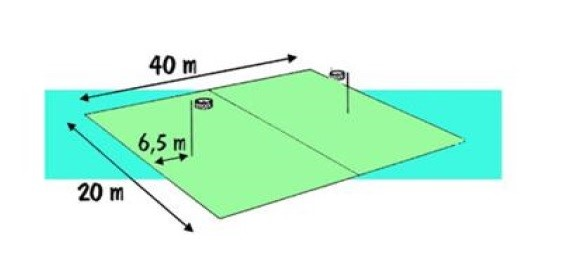
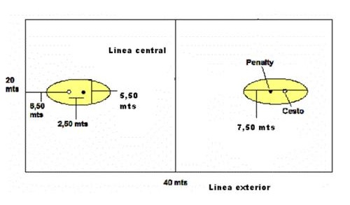

Cada equipo está compuesto por cuatro mujeres y cuatro hombres.
Se organizan de la siguiente forma, cuatro jugadores defienden (dos hombres y dos mujeres) cuatro jugadores atacan (dos hombres y dos mujeres). Hay una completa rotación con cambio de roles (ataque y defensa) cada número par de puntos, los defensas pasan a ocupar el lugar de los delanteros y estos el de los defensas.
Las reglas están pensadas para favorecer la colaboración entre los integrantes del equipo. Las diferencias de condición física (mayor altura o fuerza) quedan disminuidas. Hay una regla llamada posición de defendido que impide lanzar a la canasta (de ahora en más le llamaremos korf) si entre el korf y el que tira está un contrario colocado a menos de un metro y con la mano levantada. La participación de los diferentes sexos se realiza en igualdad de condiciones. No se permite el marcaje de hombre a mujer o viceversa, ni tampoco el marcaje de dos contra uno.
Para lograr el éxito en la jugada hay que apoyarse necesariamente en los compañeros. Como no se puede avanzar con la pelota en la mano, ni tampoco picando, sólo el pase al compañero o compañera nos permitirá alcanzar una buena posición para lanzar al korf.
No se puede empujar u obstaculizar el movimiento libre del contrario, incluso cuando posee el balón.
Área de juego:
Las dimensiones de la cancha son de 40m x 20m. El terreno de juego está dividido en dos partes iguales por la línea central.


Postes:
Los postes están situados en el eje longitudinal del campo separados de las líneas exteriores. Los postes son redondos, serán colocados perpendicularmente o encima del suelo y no podrán sobresalir a los korfs. Poseen una forma cilíndrica de 4,5 a 8 cm de diámetro.
Korfs:
Se suele utilizar algún tipo de material sintético, utilizando colores que contrasten con el que posee la superficie de juego (normalmente amarillo intenso). Los korfs tienen un diámetro que oscila entre 39 y 41 cm y su borde superior se encuentra a 3,50 m del suelo. Se ubican sobre los postes, dentro del terreno de juego y a una distancia de 6,50 m desde las líneas de fondo. Se caracterizan por la ausencia de red y de cualquier tipo de material que se sitúe en el fondo del korf.
El balón:
El korfball se juega con un balón número 5 redondo, de un tipo que ha sido aprobado por la IKF (International Korball Federation). Su circunferencia debe ser de 68.0 - 70.5cm y el peso de debe estar en el rango de 445 grs a 475 grs inclusive.
Jugadores/as o participantes:
Los equipos jugarán con ocho participantes, cuatro mujeres y cuatro hombres. Se reparten cuatro en cada zona, siendo dos hombres y dos mujeres a la zona ofensiva y la misma formación para la zona defensiva.
El número máximo de jugadores suplentes es seis.
Un jugador de cada equipo es el capitán. Debe ser un jugador que comienza el partido y debe permanecer como capitán del equipo durante todo el encuentro. Solo pueden dejar de serlo si no participa más por lesión o tarjeta roja. En este caso, otro de sus compañeros debe ser designado capitán.
Cambios de zona y de función:
Se produce cambio de zonas y de función cuando se logre acumulación de puntos pares entre ambos equipos: los jugadores defensores pasan a ser atacantes y viceversa. Después del período de descanso, se cambia el cuadro de ataque y se atacará en la zona contraria al del primer período sin cambio de función.
Duración
Un partido de korfball tiene una duración de 60 minutos, divididos en dos partes de 30 minutos cada uno, con un descanso de 10 minutos entre ambos períodos.